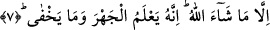

senin kalbinde, kırâatını ise dilinde toplayıp bir araya getireceğiz ta ki sen onu
unutmayasın. Bu anlam tıpkı şu âyeti hatırlatıyor: “Şüphesiz onu toplamak (senin
kalbine yerleştirmek) ve onu okutmak bize âiddir.” (Kıyame, 75/17)
7. Artık Allah’ın dilediği hariç. Şüphesiz Allah açığı da bilir, gizleneni de.
“Ancak Allah’ın dilediği başkadır.” Yani sen okumuş olduğun şeylerden -Allah’ın
unutmanı dilediği hariç- hiçbir şeyi unutmayacaksın. Unutmanı dilediği ise okunması
nesh edilerek unutturulacaktır. Çünkü nesh bir çeşit unutturma metodlarından biridir.
Adeta nesh yoluyla inmiş olan âyet mushaf ve slardan silinmiş olmaktadır. Bu âyette yer
alan “nisyan”/unutma kelimesinden maksad; kendisini hatırlamanın izlemediği genel ve
sürekli bir unutmadır. Bu unutmayla kendisini daha sonra hatırlamanın izlediği
bildiğimiz unutma olayının kasdedilmiş olması da mümkündür. Ancak bu tür bir unutma
az ve nâdirdir. Şu halde burada şöyle denmiş oluyor: Sen Allah’ın unutulmasını
diledikleri hariç hiçbir şeyi unutmayacaksın. Sonra unutulan şeyler de dâima unutulmuş
olarak sürüp gitmeyecektir. Tam tersine onu bir hatırlama izleyecektir. Nitekim âyetin
akışından insanın aklına gelen anlam budur. Bu anlamı şu rivâyet desteklemektedir:
Rivâyete göre Peygamber (s.a.) Efendimiz bir gün namaz kıldırırken bir âyeti atlar. Hz.
Übeyy (r.a.) atlanan âyetin nesh edildiğini zanneder ve bunu Peygamber Efendimiz’e
(s.a.) sorunca, Efendimiz, hayır nesih yok, unutmuşum diye cevap verir.
Yine rivâyet edilir ki sahabelerden birisi bir gece Kur’an okumaktadır. Peygamber
(s.a.) Efendimiz ona: “Bana unuttuğum bir âyeti hatırlattın” [77] der. Bundan ötürü Hz.
Peygamber Efendimiz (s.a.) duâsında şöyle derdi: “Allah’ım! Bu yüce Kur’an’la bana
merhamet et. Onu bana önder, nur, hidâyet ve rahmet yap. Allah’ım unuttuğumu bana
hatırlat, bilmediğimi öğret. Gece-gündüz Kur’an okumakla beni rızıklandır. Ey
âlemlerin rabbi! onu bana delil kıl.” [78]
Peygamber Efendimiz (s.a.) şöyle derdi: “Ben bir insanım sizin unuttuğunuz gibi
ben de unuturum. Unuttuğumda bana hatırlatın” [79] Allah da bir âyet-i kerimede
şöyle buyurur: “Bunu unuttuğun takdirde Allah’ı an” (Kehf, 18/24) Bütün bunlar
Peygamber Efendimiz’in (s.a.) bizim gibi unutabileceğine delildir. Her ne kadar onun
yanılma ve unutması bizlerin yanılma ve unutması kabilinden olmasa da... Çünkü Hz.
Peygamber dâimi biçimde ehl-i huzur’dandır.
İmam Cafer Sadık’tan rivâyet olunduğuna göre Peygamber (s.a.) Efendimiz yazmayı
bilmese de Kur’an’ı yüzünden okurdu. Bu Peygamber (s.a.) Efendimiz için bir
mûcizedir. Çünkü o ümmî idi. Allah Teâlâ onu okuyan bir kişi kılmıştır. Ayrıca
Peygamber Efendimiz (s.a.) ezberinden Kur’an okuduğu gibi, yazı bilmediği halde
yüzünden de okurdu. O bütün kemâlâtın kaynağı idi. Hatta o (s.a.) yazıyı, yazı